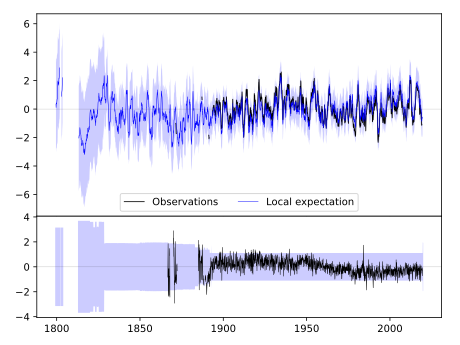
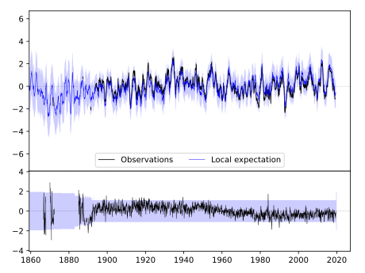

ELLSWORTH [USA]



| Neighbour | Name | Country | Distance | Lon/Lat | Years |
|---|
| 720165 | ELLSWORTH | USA | 0 | -98.2, 38.7 | 1866-2019 |
| 720175 | MCPHERSON | USA | 61 | -97.6, 38.4 | 1891-2019 |
| 720168 | HAYS 1 S | USA | 97 | -99.3, 38.9 | 1885-2019 |
| 720179 | SMITH CTR | USA | 132 | -98.8, 39.8 | 1888-2019 |
| 720142 | MANHATTAN D.Burnette | USA | 149 | -96.6, 39.2 | 1828-2019 |
| 720174 | MANHATTAN | USA | 149 | -96.6, 39.2 | 1891-2019 |
| 720183 | WAKEENEY | USA | 150 | -99.9, 39.0 | 1883-2019 |
| 720164 | EL DORADO | USA | 157 | -96.8, 37.8 | 1886-2019 |
| 720189 | FRANKLIN | USA | 170 | -99.0, 40.1 | 1890-2019 |
| 720328 | HEBRON | USA | 174 | -97.6, 40.2 | 1886-2019 |
| 720176 | NORTON 9SSE | USA | 177 | -99.8, 39.7 | 1893-2019 |
| 720323 | GENEVA | USA | 206 | -97.6, 40.5 | 1886-2019 |
| 720316 | BEAVER CITY | USA | 207 | -99.8, 40.1 | 1890-2019 |
| 720436 | NEWKIRK 1NW | USA | 222 | -97.1, 36.9 | 1893-2019 |
| 720338 | PAWNEE CITY | USA | 231 | -96.2, 40.1 | 1882-2019 |
| 720181 | SCOTT CITY | USA | 235 | -100.9, 38.5 | 1889-2019 |
| 720318 | CRETE | USA | 238 | -96.9, 40.6 | 1882-2019 |
| 720182 | SEDAN | USA | 249 | -96.2, 37.1 | 1885-2019 |
| 720178 | OTTAWA | USA | 252 | -95.3, 38.6 | 1893-2019 |
| 720173 | LAWRENCE | USA | 253 | -95.3, 39.0 | 1868-2019 |